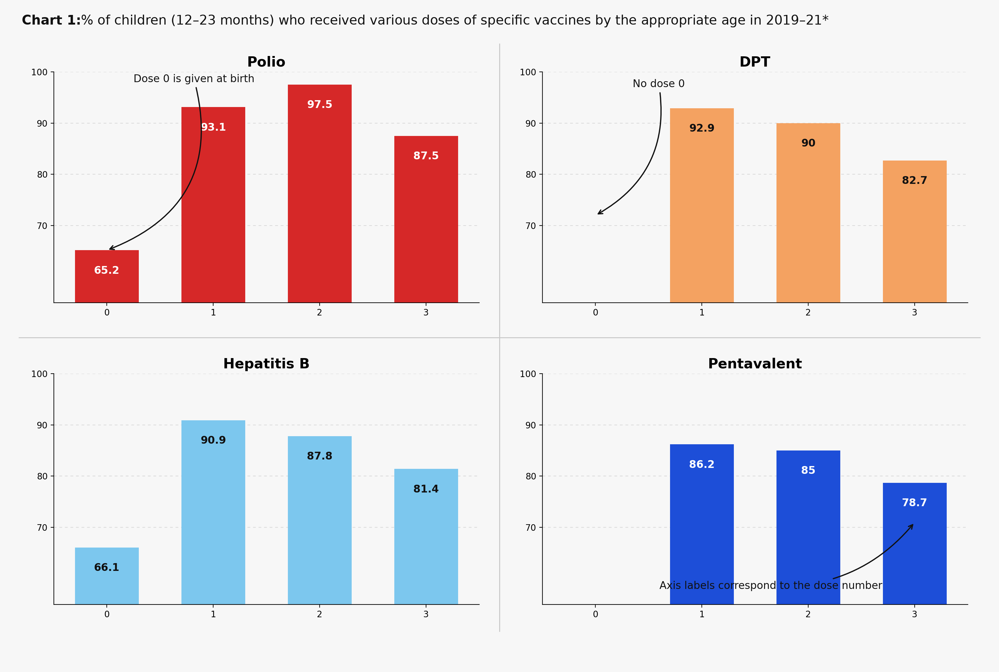
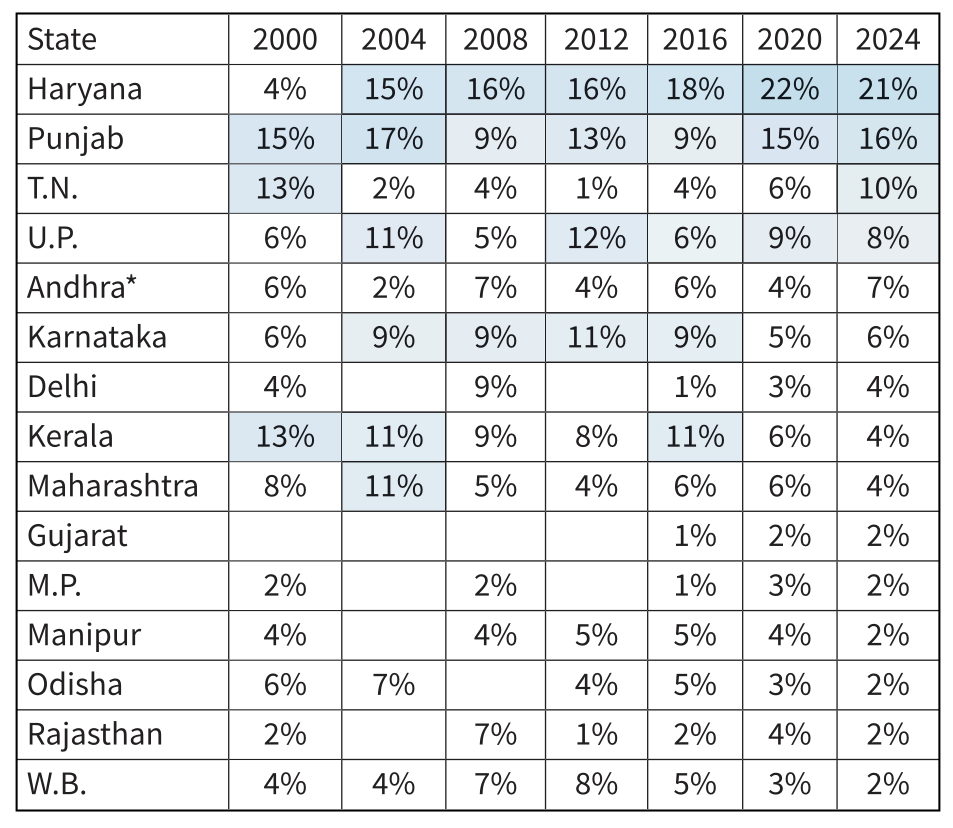
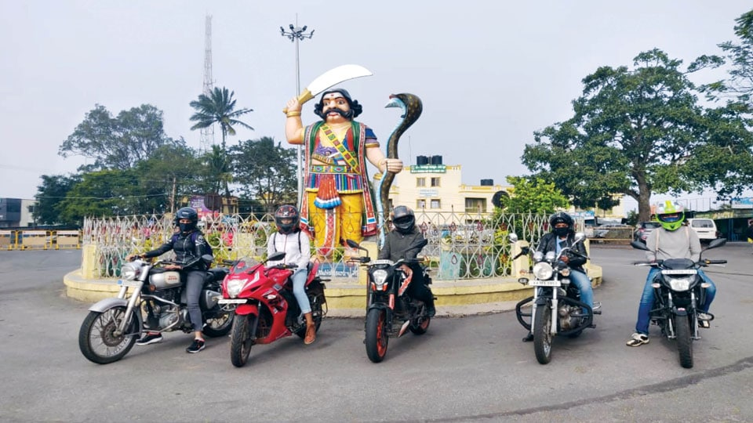
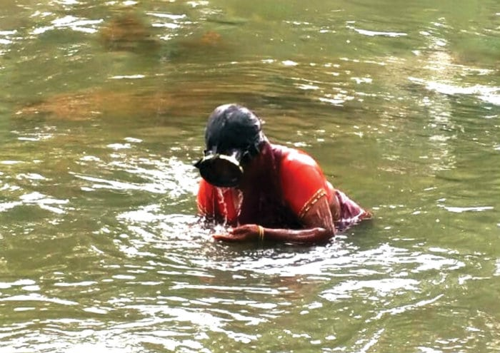

Hello, world! I'm Amanda,
a data journalist at Columbia Journalism School learning to <code/>. I dig into messy datasets, public records, and government documents to find the stories hiding inside them. This is where I document my data projects, visualizations, and experiments along the way.
If something looks broken, it probably is — I'm working on it. Feel free to say hi or send a gentle error report!
Articles

India is getting complacent in its fight against polio: Data - The Hindu
Analyzed vaccination and surveillance data to show how India's urgency in fighting polio has waned, even as the risk of resurgence quietly grows.
Google Sheets
Tableau
Flourish

Defying odds, more girls enter mechanical, civil, marine and mining engineering courses: Data - The Hindu
Crunched enrollment data across thousands of colleges to uncover a quiet but steady rise of women entering the most male-dominated engineering disciplines.
Google Sheets
Tableau
Flourish

Haryana and Punjab always dominate India's Olympic contingent: Data - The Hindu
Used historical data on India's Olympic teams to show how two states have consistently punched far above their weight in producing the country's top athletes.
Google Sheets
Tableau
Flourish

Autonomy, A++ Rating Fail to Mask the Crisis Facing Madras University - The Wire
Investigated financial and academic records to expose deep structural crises at one of India's oldest universities, hidden behind a prestigious accreditation rating.

Bikernis: Riding Beyond Boundaries - Star of Mysore
Profiled a community of women motorcyclists defying gender norms on the road, exploring what drives them and the barriers they navigate.

Gold in Gutters - Star of Mysore
Reported on a woman who earns her living sifting gold from the riverbed — part of a generations-old community of gold collectors who wade into the river daily, panning sediment by hand in hopes of finding traces of the precious metal. The story follows her grueling routine, the economics of survival behind this vanishing practice, and what it means to chase gold in the gutters of a modern city.